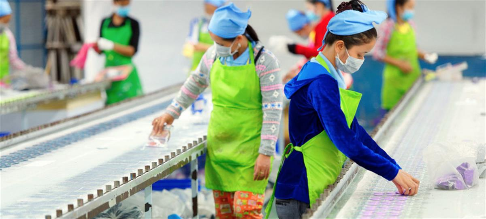

UNICEF/Fauzan Ijazah A mother and her two-year old daughter at home in Central Java, Indonesia.
30 July 2020
Tackling inequality, bridging the digital divide, greening the economy, and upholding human rights and good governance will be critical for Southeast Asia to recover from the COVID-19 pandemic, the UN Secretary-General said on Thursday.
Antonio Guterres has released his latest policy brief on the crisis, which examines impacts on the 11 countries in the subregion and recommendations for the way forward that put gender equality at the centre of response efforts.
As in other parts of the world, the health, economic and political impact of COVID-19 has been significant across Southeast Asia - hitting the most vulnerable the hardest, he said in a video accompanying the launch.
Sustainable development off track
Southeast Asia comprises Brunei, Cambodia, Laos, Indonesia, Malaysia, Myanmar, the Philippines, Singapore, Thailand, Timor Leste and Viet Nam.
Prior to the pandemic, countries were lagging behind in achieving the Sustainable Development Goals (SDGs) by the 2030 deadline.
Despite strong economic growth, the policy brief reveals that the subregion was beset by numerous challenges including high inequality, low social protection, a large informal sector, and a regression in peace, justice and robust institutions.
Furthermore, ecosystem damage, biodiversity loss, greenhouse gas emissions and air quality were at worrying levels.
Inequalities revealed, tensions surfacing
The pandemic has highlighted deep inequalities, shortfalls in governance and the imperative for a sustainable development pathway. And it has revealed new challenges, including to peace and security, the Secretary-General said.
The current situation is leading to recession and social tensions, while several long-running conflicts have stagnated due to stalled political processes.
All governments in the subregion have supported my appeal for a global ceasefire - and I count on all countries in Southeast Asia to translate that commitment into meaningful change on the ground, he added.
Regional cooperation praised
The new coronavirus that causes COVID-19 first emerged in Wuhan, China, in late 2019, and the pandemic was declared in March. Globally, there have been more than 16.5 million cases, with nearly 657,000 deaths, the World Health Organization (WHO) reported on Wednesday.
While the disease arrived in Southeast Asia earlier than in the rest of the globe, the UN chief commended governments for acting swiftly to battle the pandemic.
On average, they took 17 days to declare a state of emergency or lockdown after 50 cases of COVID-19 were confirmed, according to the policy brief.
Containment measures have spared Southeast Asia the degree of suffering and upheaval seen elsewhere,” said Mr. Guterres, who also praised cooperation among the countries.
Four critical areas for response
The Secretary-General underlined four areas that will be critical to ensuring recovery from the pandemic leads to a more sustainable, resilient and inclusive future for Southeast Asia.
The first; tackling inequality in income, health care and social protection; will require short-term stimulus measures as well as long-term policy changes, he said.
Mr. Guterres also advised countries to bridge the digital divide so that no one is left behind in an ever-more-connected world.

ILO/Marcel Crozet Factory workers in an assembly line in Cambodia.Due to the over dependence on coal and other industries of the past, he encouraged greening the economy, including to create future jobs.
Upholding human rights, protecting civic space and promoting transparency are all intrinsic to an effective response, he concluded.
Advance gender equality
Central to these efforts is the need to advance gender equality, address upsurges in gender-based violence, and target women in all aspects of economic recovery and stimulus plans the UN chief said.
This will mitigate the disproportionate impacts of the pandemic on women, and is also one of the surest avenues to sustainable, rapid, and inclusive recovery for all.
Coronavirus Portal & News Updates
Readers can find information and guidance on the outbreak of the novel coronavirus (2019-nCoV) from the UN, World Health Organization and UN agencies here. For daily news updates from UN News, click here.
Though the challenge is formidable, the Secretary-General underlined the UN’s strong commitment to helping Southeast Asian countries achieve the SDGs and a peaceful future for all.
SOURCE: UN NEWS